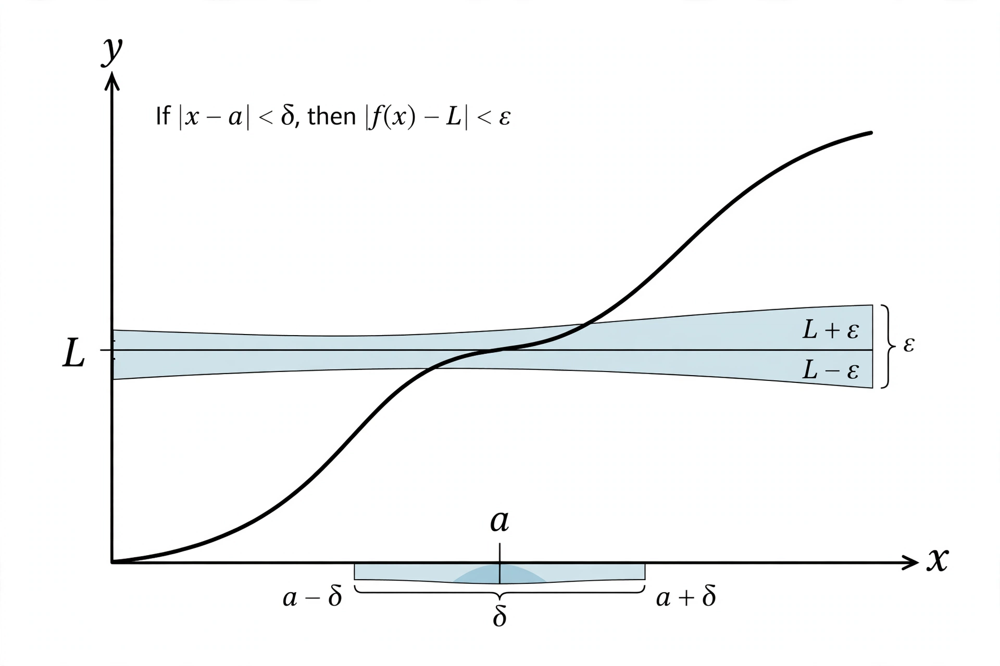

Mathematical analysis

[Image: A curve with a narrow shaded band around it, suggesting epsilon-delta precision]
Mathematical analysis is the branch of mathematics dealing with limits and related theories — differentiation, integration, measure, infinite series and analytic functions. It is what calculus becomes when its methods are made fully rigorous.
Analysis grew in the 19th century as Cauchy, Weierstrass, Dedekind and Cantor replaced geometric intuition with arithmetic definitions, a movement called the arithmetisation of analysis. Its main subfields include real analysis, complex analysis, functional analysis, and harmonic analysis.
Scope
Where algebra studies structure and geometry studies shape, analysis studies change and approximation — how close is close enough, and what happens in the limit. Its tools (inequalities, estimates, convergence arguments) pervade physics, engineering, probability and economics.
The real numbers themselves are an analytic construction: Dedekind cuts and Cauchy sequences build them from the rationals so that limits exist whenever they should.